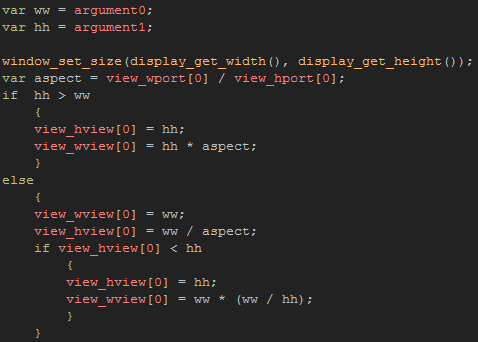

Tutorial
Page 4 of 15
Fullscreen Window
Okay, so now you know how to make your game fullscreen, and you know how to make a maximal window to scale to the display size, but what about combining the two? Many games have a fullscreen window
option that will maximise the game window to fit the screen, but not actually go into fullscreen mode, so lets do this now.
Open the object obj_Windows_Fullscreen_Window and add a Create Event to it with the following code:
As with the previous objects, we store the base width and height, as well as create a "toggle" variable, however, we also set the view port to be the size of the display. This will not be
visible to the player yet, as we do not have views enabled (check the room properties) but when we do enable them, we want the port on the screen to be the size of the display, so you can set these values
just now.
For this next part we are going to write two scripts which we will use to first fullscreen the window, then to center the view on the room within that window. So, create a new script asset and call it
scr_Window_Fullscreen, then add the following code:

Can you see what this script does? Its a slightly more complex version of the code that we wrote for creating a maximal window, only now instead of stretching the game window, we are stretching the view width
and height within the game window, but with a couple of extras...
To start with we get the aspect ration of the view port since we are having to adapt the view width and height based on that, and not the aspect ratio of the room. We then check to see if the
room is landscape or portrait, and if it's portrait, we set the view height to the base height, then scale the view width proportionally based on the aspect ration of the view port. This will make the view width and
height a scaled value that is equivalent to the view port. This may be complex to visualise, so lets look at the following image:

The important thing to note here is that the aspect ratio for the view width and height is the same as the display. But what happens if the game is in landscape? The code covers that too, based on the
same principles that we learned on the previous page to deal with scaling a room to a maximum window width, only, again, we are scaling the view proportionally to be the same aspect ratio as the display. However,
you will notice there is an extra step here.
What happens when a game has room proportions such that when multiplied by the aspect ratio they leave the view height smaller than the actual room height? Well, the room will be cropped and you will
lose part of the game area off the top and bottom of the screen. To prevent this, our script does a check to see what the view height is, and if it's smaller than the room, we then adjust the view so that it is the
same height as the room, and has the correct aspect ratio.
The next step is to add this script to the object, so add a Key Pressed Event for the digit 1 with the following:
Here we toggle the variable, then check it and either run the script (enabling views and making view[0] visible) or we reset the window size (disabling views). You can run the game now to test this.
Once you have tested, you will have noticed that the view is not centered on the room and that the parts of the view that fall outside of the room are coloured. The colour we see is that which you set in the
Room properties, and you can also change it through code (the next page of the tutorial shows how to cover it with black if you prefer). As for centering the view, for that we will make a nother small script.
Make a new script and call it scr_Center_View and add this code:
This simple script will center the view on the given point, and you can now add this into the key pressed event, just after the first script, using the base_width and
base_height variables to calculate the position in the room to center the view. the final event code will look like this:
If you run the game now, you will see that the window is maximised and centered on the given point.
Click on the Next button to go to the next page of the tutorial.